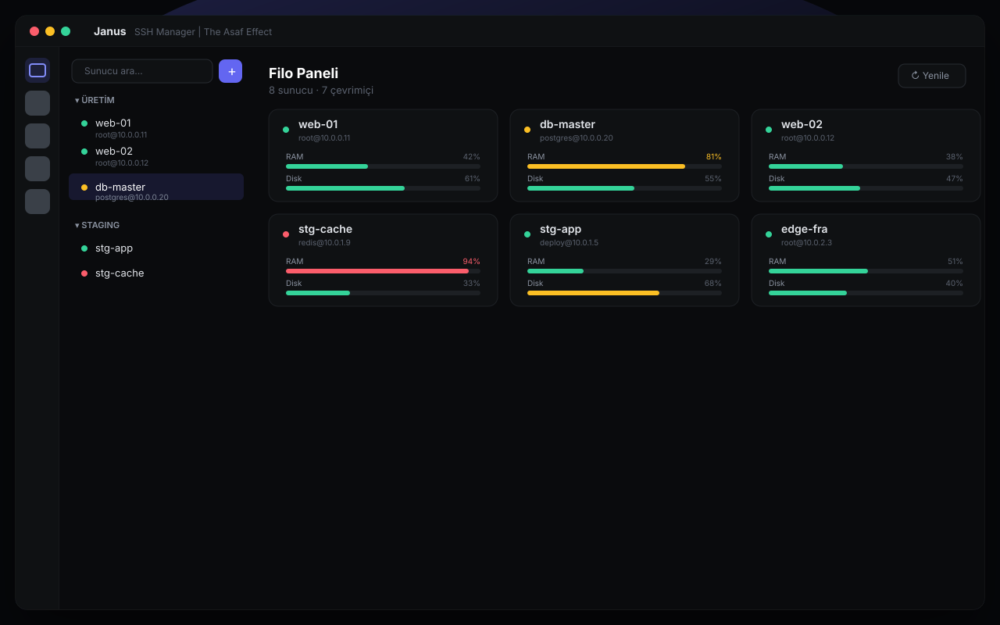
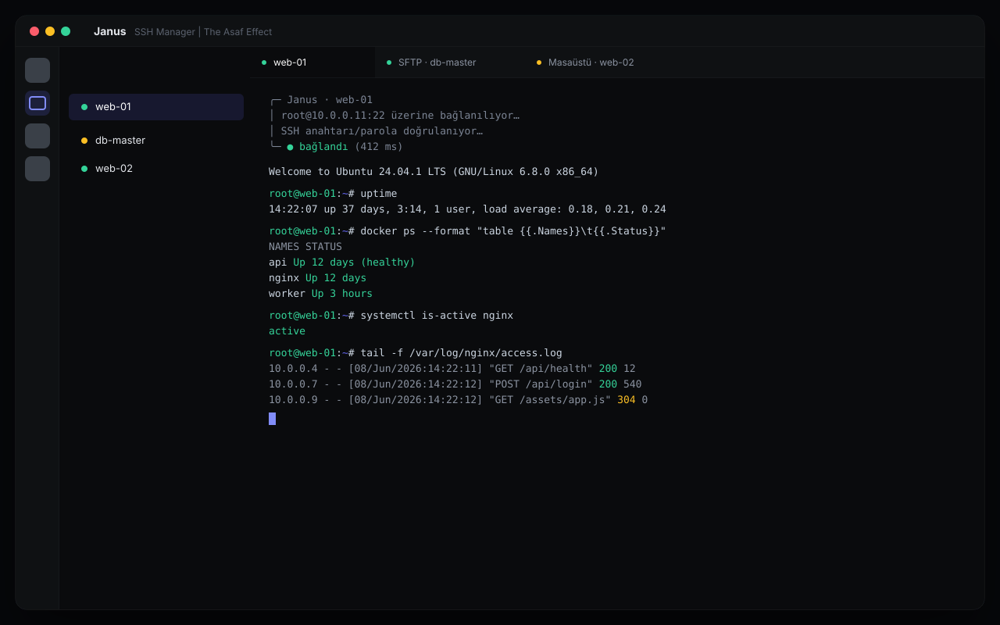

Profesyonel, çok protokollü sunucu komuta merkezi. SSH terminal, SFTP, VNC uzak masaüstü, port tünelleri, canlı filo paneli ve çoklu komut — hepsi şifreli tek dosyada.

xterm tabanlı tam donanımlı terminal — çoklu sekme, arama, otomatik yeniden bağlanma ve bağlantı durumu kayıtları. Docker konteynerlerini, systemd servislerini ve süreçleri doğrudan arayüzden yönet; logları canlı izle.

Çoklu sekme, arama, otomatik yeniden bağlanma, jump host desteği.
Sunucunun ekranına SSH tüneli üzerinden şifreli bağlan, fare/klavye kontrolü.
Tüm sunucuların CPU/RAM/disk durumu canlı, tek ekranda komuta merkezi.
Bir komutu onlarca sunucuda aynı anda çalıştır, çıktıları yan yana gör.
Dosya transferi + local/remote/dynamic port forwarding.
Konteyner/servis başlat-durdur, süreç yönetimi, canlı log akışı.
Uygulama içinde anahtar üret, sunucuya tek tıkla kur.
5 tema, komut paleti (⌘K), klavye kısayolları, Touch ID kilidi.
Tüm sunucuların, anahtarların ve parolaların tek bir AES-256-GCM ile şifreli dosyada saklanır. Master parolan cihazından asla çıkmaz. İstersen Touch ID ile aç, boşta otomatik kilitle. VNC ve veritabanı bağlantıları SSH tüneli üzerinden geçer — hiçbir şeyi internete açmana gerek yok.